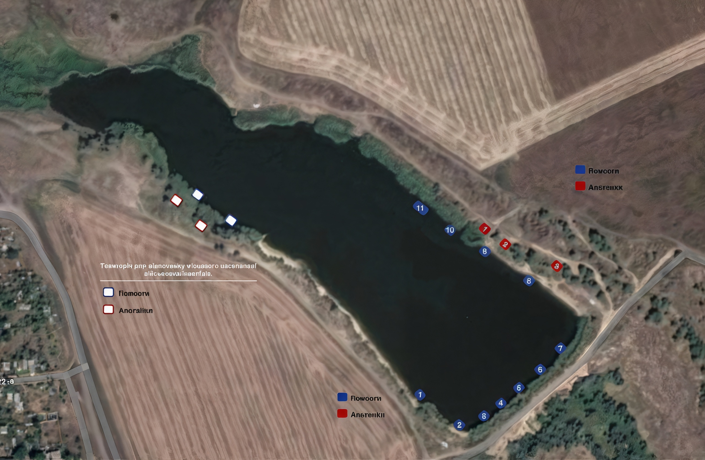

Про нас
Риболовля — це наше все! Озеро Світле — це не просто ставок. Це місце, де кожен рибалка, новачок чи професіонал, знайде спокій, адреналін та незабутні враження. Ми пропонуємо комфортні умови для риболовлі, чесні правила, регулярне зариблення, затишні альтанки та ввічливе обслуговування. Приїжджайте та переконайтесь самі — риболовля в нас справді особлива!
Умови риболовлі
- Рибалка на хижу рибу: Один спінінг — 400 грн. Ліміт — 3 кг. Понад норму — 220 грн/кг.
- Рибалка на мирну рибу: До 3 вудок з 1 гачком. 600 грн/особа (6:00–20:00), 1100 грн — 2 особи на одному помості. Ліміт — 4 кг.
- Спорт пакет: 400 грн. Без вилову. Фото/відео — і одразу випуск. Мат, антисептик, підсак — обов’язкові. Риба в садку чи травмована — по тарифу.
- Оренда: антисептик + мат — 50 грн, підсак — 50 грн, поплавкова вудка без помосту — 250 грн (2 кг), додаткова вудка — 200 грн (+1 кг), альтанка з риболовлею — 1600 грн, без — 1000 грн день / 600 грн пів дня, шезлонг — 100 грн, парасолька — 50 грн.
- Особливі умови: трофейна риба (понад 5 кг) — лише з фотофіксацією та відпуском. Подарунок — день безкоштовної риболовлі.
- Для місцевих: безкоштовно 1 вудка, 3 кг (краснопірка, плотва, карась). Короп — 50% знижка, до 5 кг. Хижа риба — не входить.
- Ціни понад норму: короп — 140 грн/кг, карась — 100 грн/кг, щука — 220 грн/кг, білий амур — 170 грн/кг.
Пільги
- Інваліди 1–2 групи, учасники війни, АТО — безкоштовна риболовля у загальних зонах при наявності посвідчення. Ліміт — 3 кг.
- На помостах — знижка 30% для пільгових категорій, але норма вилову — 3 кг.
Умови бронювання
Онлайн-бронювання — передоплата 50% від вартості послуг.
Заборони
- Рибалка без дозволу адміністрації.
- Перевищення ліміту без оплати.
- Привласнення риби/біоресурсів незаконно.
- Човни на водоймі.
- Купання у ставку.
- Сміття на території.
- Браконьєрство.
- Риболовля під час зариблення.
- Шкода трофейній рибі — штрафи.
- Снасті з кількома гачками — заборонено.
Увага! Перебування дітей без дорослих заборонено.
Місцезнаходження
Красносільський ставок №2 (Старі дачі), поблизу Одеси. Нижче — інтерактивна карта для зручного доїзду:
Популярні питання
- Чи можна ловити вночі? — Наразі тільки денна риболовля.
- Чи є кафе? — Працюємо над цим!
Інше
Заселення риби
Ми регулярно поповнюємо водойму свіжою рибою:
Контакти
Email: info@mirrybalki.ua
Отримувач: ФОП Чегак Павло Олександрович
IBAN: UA463052990000026005024903277
Банк: АТ КБ “ПРИВАТБАНК”
Призначення: за риболовлю